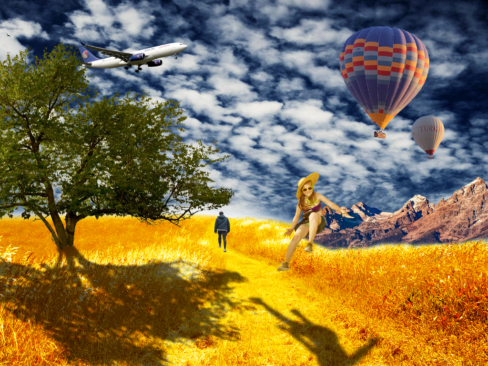
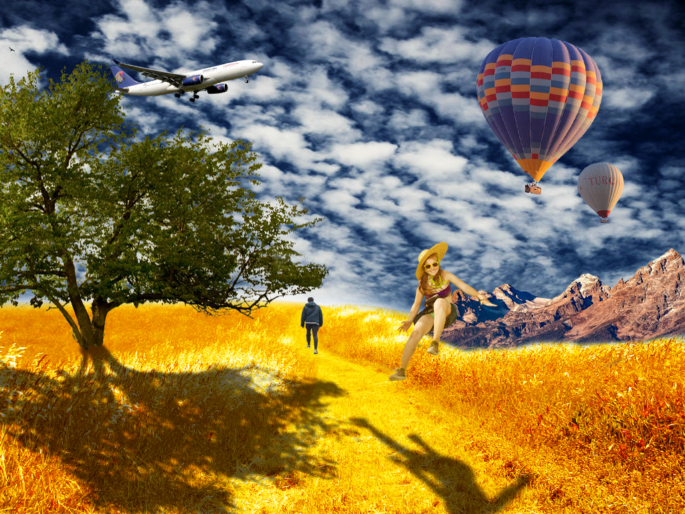

U ovom poglavlju sam radila vježbe manipulacije fontom koristeći FontForge, pa sam tako kreirala vlastiti font. U drugoj vježbi sam crtala krivulje pomoću Bezierove krivulje u programu Inkscape. U trećoj vježbi cilj je bio usvojiti osnove rada sa slojevima, dupliciranja, grupiranja i transformaciju objekata, definirati swatch boje i koristiti iste na objektima.Četvrta vježba je zahtjevala kreiranje vlastitog složenog objekta u kojem smo koristili tehnike spajanja i izrezivanja objekata i primijenili različite vrste gradijenata. Zatim smo sve naučene tehnike morali iskoristiti u projektnom zadatku gdje je tema bila flora i fauna podmorja.

U ovom poglavlju sam koristila Adobe Photoshop kako bih kroz tri vježbe usvojila osnove rada s piksel grafikom. Tako sam u petoj vježbi uklanjala nedostatke na slici pomoću alata kao što su Lasso Tool ili Clone Stamp. Šesta vježba me je naučila kako koristiti tehnike neinvazivnog koloriranja slike koju sam primijenila na crno-bijelu fotografiju. U sedmoj vježbi sam kombinirala više fotografija izrezivanjem dijelova različitih slika i spajanjem u jednu fotografiju. U projektnom sam zadatku koristila razne fotografije, neke zadane neke osobne kako bi dobila zanimljivu fotomontažu pomoću naučenih tehnika.
.jpg)
.jpg)
.jpg)
.jpg) 


U ovo poglavlju koristila sam program Shotcut za obradu videa i Sublime Text za stvaranje web stranica u HTML-u. Kroz devetu vježbu sam naučila izrezivati više video isječaka i spojiti ih u jedan, dodavati razne video efekte, brisat i dodavat zvukove i dodati obrađeni tekst unutar videa. U desetoj vježbi sam stvorila vlastitu HTML stranicu na kojoj sam prikazala multimedijske datoteke i sve zajedno uredila pomoću CSS-a i zatim postavila na Github platformu.